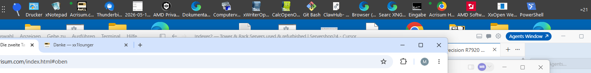

Schnell starten
Häufige Programme, Ordner und Dateien an der Leiste — statt Desktop voll Icons oder Ordner in der Taskleiste verstecken.
Programme und Ordner anheften — ein Klick startet, kein Suchen in der Taskleiste.
Zweite Leiste für Windows 8.1, 10 und 11 · Desktop-Platz statt Überlagerung · jetzt auch portabel per ZIP

Zahlen mit PayPal, Karte und weiteren Methoden.
Läuft auf Windows 8.1, 10 und 11 (64 Bit) — siehe Systemanforderungen.
Fragen vor dem Kauf? manibauriedl@gmail.com
Zahlung in neuem Fenster — Shop bleibt offen. Zurück: einfach Shop-Tab wählen.
Häufige Programme, Ordner und Dateien an der Leiste — statt Desktop voll Icons oder Ordner in der Taskleiste verstecken.
Programm schon offen? Ein Klick auf das Symbol holt genau dieses Fenster nach vorne — ohne Suchen in der Windows-Taskleiste oder ständiges Minimieren.
Eine zweite Leiste, kein Ersatz der Windows-Taskleiste. Gewohnte Bedienung bleibt — nur die Startrampe wird besser.
Ausführliche Hilfe mit Animationen: Platz reservieren, verschieben, vergrößern — ohne Englisch und ohne Handbuch-Suche.
Wer am PC Ordnung will, will auch beim Schreiben keine grauen Mails — deshalb gibt es hier einen echten Tipp neben dem xx1lounger, ohne Extra-Kauf.
Gratis · kein Kauf nötig · kein Zugriff auf Ihren PC
Anleitung öffnenWer gleichzeitig viele Programme offen hat, kennt das: Fenster stapeln sich, die Taskleiste wird zum Ratespiel, oft hilft nur alles minimieren. Genau hier liegt eine Stärke des xx1lounger — die Animation unten startet mit diesem „Fenstergemetzel“ und zeigt, wie die Leiste im Alltag entlastet. Ausführlich für Sucher ohne Markennamen: Zweite Taskleiste für Windows — Ordner anheften, Fenster nach vorne. Das ist etwas anderes als nur die Windows-Taskleiste oder eine Befehlsleiste am Rand: Windows hat keine zweite Taskleiste.
Die Demo beginnt bei Schritt 1 — Fenstergemetzel. Alle Schritte sind in der Leiste der Animation anklickbar.
Selbst testen: Oben auf der Seite steht der kostenlose Test-Code — installieren, Leiste befüllen und schauen, ob Ihr Arbeitsablauf mit vielen Fenstern ruhiger wird. Zum Test-Code
Viele Programmleisten legen sich über den Desktop. Mit Desktop-Platz reservieren verkleinert Windows den Arbeitsbereich — Fenster enden dann an der Leiste.
Ehrliche Übersicht für Windows 8.1, 10 und 11 (64 Bit) — Stand Version 2.0.0. Kein Marketing-Mischmasch.
Nicht unser Fokus: Mac-Dock mit Zoom-Effekten oder reine Deko-Leisten ohne Arbeitsfläche — dafür gibt es andere Tools.
Das Wichtigste aus dem xx1lounger — Stand Version 2.0.0.
Die Leiste ist jetzt ein eigenes, eigenständiges Programm. Per Setup installieren — oder die ZIP-Variante aus einem Ordner starten, auch vom USB-Stick.
Ein grüner Punkt am Eintrag zeigt: dieses Programm hat gerade ein Fenster offen — auch minimiert. Reine Hintergrundprozesse ohne Fenster zählen nicht.
Ist das Ziel schon offen, fragt die Leiste nach statt ein zweites Fenster zu starten. Webseiten-Pins lesen die Browser-Adressleiste (Chrome/Edge) — kein falscher Tab mehr.
Bei einem Problem sehen Sie den Bericht vorher und wählen: als Datei speichern, mit dem eigenen E-Mail-Programm senden oder direkt an Acrisum. Keine automatische Übertragung.
Im Anheften-Fenster tippen — Treffer erscheinen mit Namen. Klick = an die Leiste, Position wählbar (Anfang/Ende). Ordner und Netzpfade zusätzlich über „Ordner wählen“.
Leiste an allen vier Rändern des Bildschirms einrasten oder frei positionieren. Mit reserviertem Platz wandert der freie Rand mit.
Symbole + Text, nur Symbole oder nur Text — direkt im Menü der Leiste. So bleibt sie schmal oder zeigt volle Namen.
Vergrößerungsstufen per Strg+ / Strg− oder Menü. Mit reserviertem Platz wächst der freie Rand mit — lesbar, ohne Icons zu verdecken.
Überlauf hinter » — lange Programmlisten ohne schmalen Icon-Zoo.
Hintergrund wählen (Grau, Schwarz, Büro-Grün …). Transparenz-Stufen — ohne Design-Pakete von fremden Seiten.
Meldet sich nach Explorer-Neustart wieder an. Speichern mit Sicherungskopie — Ihre Leiste wird nicht durch kaputte Dateien überschrieben.
Windows 8.1, 10 und 11 (64 Bit). Setup legt Desktop und Startmenü an; Autostart-Frage beim ersten Start, später im Menü änderbar. Symbol im Infobereich (Tray). Update per Klick von acrisum.com.
Kurz und klar — damit niemand nach dem Kauf überrascht ist.
%APPDATA%\xx1lounger\ — bleiben bei Updates erhalten.
Keine Panik: Windows ist bei neuen Programmen vorsichtig — das ist normal und kein Virus-Hinweis.

Gute Nachricht: Das Setup ist mit Certum Code Signing signiert (Herausgeber: Manfred Adalbert Bauriedl). Windows kennt uns als Herausgeber noch nicht so lange — deshalb die blaue Vorsichtsmeldung. Das Setup selbst ist in Ordnung.
Kein Administrator nötig — und kein Internet während der Installation. Wenn Norton oder Telekom-Sicherheit zusätzlich blockiert: Ausnahme setzen und erneut starten (Details auf der Dankeseite nach dem Kauf).
Wenn Sie schon einmal eine schwebende Leiste am Rand ausprobiert haben, kennen Sie das vielleicht.
Die Leiste oben am Bildschirm — Symbole mit Namen, Überlauf hinter ».
Schon nach den ersten Tests haben uns Tester den Nutzwert bestätigt.
Details: Heute & Geplant — für Windows 8.1, 10 und 11 gleichermaßen.
Ideen und Erfahrungen willkommen — manibauriedl@gmail.com · Bewertung auch über das Formular unter Stimmen.
Kurze Meinungen von Bekannten und ersten Testern — ehrlich, ohne Agentur-Text.
Lädt …
Name + ein paar Sätze — erscheint für alle Besucher. Bei Spam antwortet bzw. löscht das Team.
Ja — 64 Bit, ein Setup für Windows 8.1, 10 und 11. Kein veraltetes Zusatzpaket, kein „nur Win 10“. Nach der Installation offline nutzbar. Übersicht: Heute & Geplant.
Eine zweite Taskleiste für Windows: Programme, Ordner und Verknüpfungen anheften und mit einem Klick starten. Optional mit Desktop-Platz reservieren: dann eine reservierte Anwendungsleiste (AppBar — Windows hält Randplatz am Bildschirm frei) statt nur über dem Desktop zu schweben (Überlagerung / Overlay).
Viele Programm-Docks (Programmleisten im Dock-Stil) legen sich über den Desktop — Fenster können die Symbole überdecken. Mit „Desktop-Platz reservieren“ endet der Arbeitsbereich an der Leiste — Fenster liegen dann nicht darunter.
Heute: eine Leiste am Hauptmonitor, Desktop-Platz dort reservieren. Symbole auf Monitor 2/3 bleiben auf ihrem Schirm. Geplant: eigene Leiste und Freiräumen pro Bildschirm — siehe Heute & Geplant.
Bei schwebenden Leisten schalten viele Automatisches Ausblenden (Auto-Hide) ein, damit Fenster nicht im Weg liegen. Mit reserviertem Desktop-Platz ist das in der Regel nicht nötig — der Rand bleibt frei.
Windows verkleinert den sichtbaren Arbeitsbereich, damit Icons und Fenster nicht unter der Leiste liegen. Das ist der Unterschied zur Überlagerung (Overlay), bei der die Leiste nur darüber schwebt. In der Hilfe sehen Sie das als gelben Freiraum in der Animation.
Häufige Programme an die xx1lounger-Leiste heften. Beim Überfahren sehen Sie den Namen des Eintrags; ein Klick holt das passende Fenster sofort nach vorne — statt in der Windows-Taskleiste zu suchen oder alles zu minimieren. Schon offene Programme werden nicht doppelt gestartet.
Ja. Ordner, Verknüpfungen und Programme lassen sich an die Leiste legen — praktisch, wenn Windows Ordner nicht zuverlässig an die Taskleiste pinnt.
Nein. xx1lounger ist eine zweite Leiste — Startrampe für häufig genutzte Dinge, kein Ersatz der Windows-Oberfläche (kein Shell-Ersatz, kein Mac-Look-Paket).
Windows hat nur eine Taskleiste. Verschieben oder auf dem Zweitmonitor wiederholen ändert das nicht. Viele kostenlose Leisten am Bildschirmrand sind Befehls- oder Suchleisten — oft mit Systemwerten, nicht als Startrampe fürs Büro. xx1lounger ist eine eigene Programmleiste daneben: Programme und Ordner anheften, Fenster mit einem Klick nach vorne. Ausführlich: Windows hat keine zweite Taskleiste.
Die Leiste meldet sich zuverlässig wieder an — auch nach Explorer-Neustart oder Absturz. Ihre angehefteten Symbole und Einstellungen bleiben erhalten.
Oben, links oder rechts am Rand des Hauptbildschirms. Der reservierte Platz passt sich der Position an — in der Hilfe als Animation „Verschieben & Platz“.
13 Vergrößerungsstufen per Strg+ / Strg− oder Menü. Mit reserviertem Platz wächst der freie Rand mit — anders als bei reiner Icon-Vergrößerung ohne Platz (Zoom ohne AppBar).
Auf der Leiste Anheften klicken. Im Fenster tippen — passende Einträge erscheinen mit Namen. Symbol anklicken = an die Leiste. Ordner und Netzpfade zusätzlich über „Ordner / Netz wählen“. Anders als bei vielen Docks: nicht vom Desktop ziehen, sondern suchen und auswählen.
Preis wird aus preis.json geladen …
Windows 8.1, 10 und 11 (64 Bit). Details: Systemanforderungen. Installation per Setup oder portabel per ZIP; Einstellungen pro Benutzer unter %APPDATA%\xx1lounger\.
Nein — Windows warnt bei neuen, noch wenig verbreiteten Programmen vorsichtig. Unser Setup ist signiert (Certum). Einfach Weitere Informationen → Trotzdem ausführen. Schritt-für-Schritt mit Schema: Installation — blaue Meldung.
PayPal, Karte (Visa/Mastercard u. a.) und weitere Methoden über Stripe. Bezahlung in neuem Fenster — Shop bleibt offen; danach Download auf der Dankeseite.
Oben links auf Acrisum oder im Menü auf Start. Impressum und Datenschutz haben denselben Weg. Nach dem Kauf landest du automatisch auf der Dankeseite — von dort ebenfalls über Start zurück.
Diese Version: eine Leiste auf dem Hauptbildschirm. Geplant als eigene Stufe: eine eigene Leiste je Bildschirm — und vieles mehr. Erste Büro-Tests laufen; Ihre Ideen sind gefragt.
Der xx1lounger prüft selbst auf acrisum.com (höchstens einmal am Tag). Ist etwas Neues da: ein Klick auf Aktualisieren — Python kommt mit, Einstellungen bleiben. Nach dem Kauf können wir zusätzlich an Ihre Kauf-E-Mail schreiben, vor allem wenn Sie noch eine ältere Fassung ohne diesen Prüfer haben. Kein Themen-Newsletter. Abbestellen jederzeit per Mail; Details in der Datenschutzerklärung.
Ab Thunderbird 128 blockiert Mozilla manchmal die Farbwahl beim Schreiben. Das hat nichts mit dem xx1lounger zu tun — aber unleserliche Mails nerven genauso wie Fenster-Salat.
Auf unserer Schritt-für-Schritt-Anleitung steht der Fix und ein klarer Abschnitt Rückgängig machen, falls es nicht passt. Gratis, ohne Kauf, ohne Fernzugriff auf Ihren Rechner.
Der xx1lounger ist der komplett neu gebaute Nachfolger. Für Bestandskunden läuft die Update-Prüfung des alten Launchers weiter — Ihre Einstellungen bleiben. Ein Umstieg auf xx1lounger lohnt sich: portabel, grüner Lauf-Punkt, Fehlerbericht mit Auswahl.
Nur per E-Mail an manibauriedl@gmail.com (kein Telefon bei diesem Betrag). Bitte den Link nutzen — dann kommt die automatische Eingangsbestätigung; Erstattung in der Regel kulant über Stripe. Gesetzliches Widerrufsrecht: Widerrufsbelehrung.
Zahlung über Stripe (PayPal, Karte u. a.) in neuem Fenster — Shop bleibt offen. Es gelten AGB und Widerrufsbelehrung. Nach dem Bezahlen kommst du zur Download-Seite.